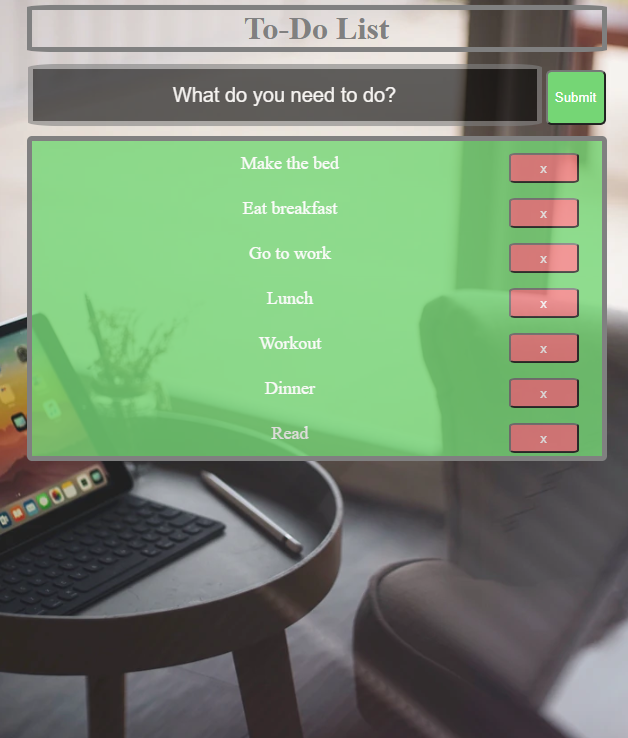
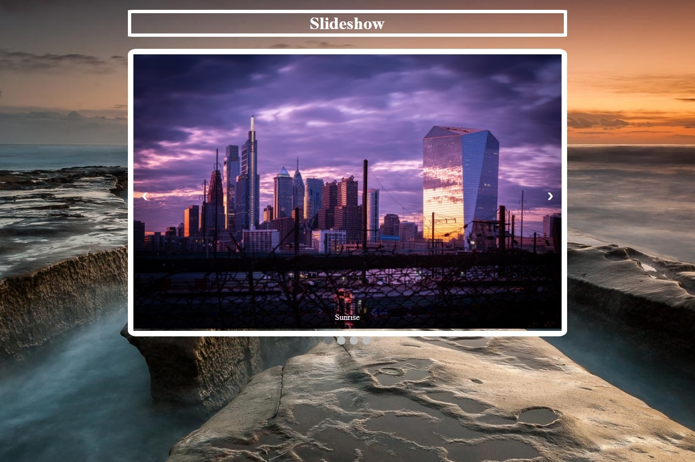

Welcome to my portfolio, I am a senior studying Computer Science
at Georgia State University. In this portfolio,
I wanted to share how I learned to code and the projects
that I have been working on over the Summer of 2020. This site was created using
a template from html5up called "Massively". I have attached my
LinkedIn and Github in the top right hand corner. Below this are some of the projects that
I have worked on by myself or school projects. Feel free to explore!

These are the small projects that came up in my mind that I decided to code out. By starting from the basics, I was able to relearn some of the old things that I may have missed. In here is all my projects, even the ones I haven't listed below. You can also view the source codes here.

To start off with a simple project, I decided to make a short rock, paper, scissors game a user can play with the computer. It was something I wanted to do in order to try out other such as HTML and CSS. Play below, first to 3 wins!
Next, I created a calculator app, this one was a fun one that got me introduced to working with CSS. It is a simple calculator app that does what it says. Feel free to use below!

This project was created when I started getting used to CSS grids. Using some creativity to bring back a game I used to play as a little kid.

In this project, I learned how to implement and use local storage to keep a user's state within their local machine. I also learned how to update the local storage as things get added or removed.

In this project, I learned about different types of styles and mainly focused on regex expressions. I wanted all of the fields to match its regex before so that when the button is pressed, it will display the account was created.

This project taught me various CSS animations. I created a slideshow how a typical day from sunrise to sunset and created a fading animation to transition between slides.

In this project, I learned how to integrate form responses into the local storage and have it display on the screen. This allows users to input their favorite Bible quotes or any quote and store it in their storage.

In this project, I learned about the use of AGILE methodology. We had 3 separate sprints. FOr the first sprint, I was the programmer doing research and development for the frameworks we were going to use. For the second sprint, I was the
Scrum Master distributing roles and timelines for when issues should be populated. We used an application called Zenhub to track our team's progress. On our final sprint, I was the Project Manager working on presenting our final product.
Our product is a real-time database that monitors Mercury Messenger's application. This was a two-team project, so we had to collaborate with the other team's app and get it to connect. This was the most challenging, yet most rewarding
project yet.

This contains all the work that I am currently working on in Web Programming. The summer has prepared me for this class, and I am still learning and implementing
the knowledge gained in this class to my own personal projects. This portfolio only used HTML and CSS as it is one of our first assignments and we could not use
other resources if it has not been taught yet. Feel free to check out the progression throughout my Web Programming Course!